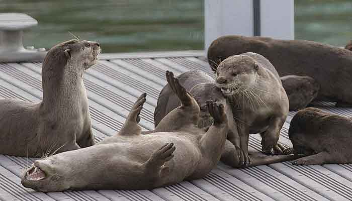
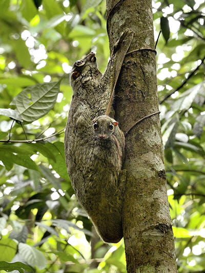

If you thought Singapore had no rare species of animals, think again! I too was surprised to learn about the presence of an endemic species in Singapore, endemic meaning that the species is found only in that particular area.
The Raffles Banded Langur (Presbytis femoralis) can only be found in the Central Catchment Nature Reserve of Singapore and the forests of Southern Johor, and they are critically endangered. Take a look at the short clip to observe the Raffles Banded Langur in their home.
Return of the otters
Once driven out of Singapore by our rapid urbanisation, recent efforts to rebuild our waterways and canals have attracted the Smooth-coated Otters (Lutrogale perspicillata) back from Johor, Malaysia, back to Singapore.
You never know when they'll appear! Whether I am walking along Sungei Tampines to get to the mangrove boardwalk, or strolling along the bridges above the intertidal shores of Labrador Park, it's always a pleasant surprise to hear members of public call out that an otter family has been spotted.
Gliding and hiding in plain sight
While trekking up Bukit Timah Nature Reserve, anticipations ran high as I awaited the sight of a gliding mammal - the Sunda Colugo (Galeopterus variegatus). But alas, lady luck was not on my side that day, and the heavy rains only dampened the mood further.
The Sunda Colugo doesn't fly but rather glides, using its extendable skin membrane to act as a parachute to aid in its glide between trees. If you are luckier than me, you might find one clinging onto the tall woody trees, forming a weird lump that camouflages almost perfectly on the rough bark of the trees. Try spotting the baby colugo peeking out from the side of the mother!